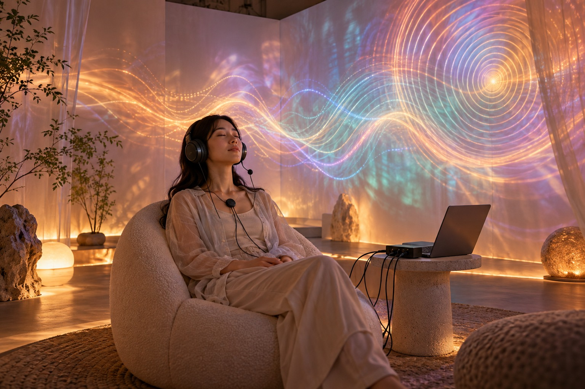

AI-generated concept visualization
Generative music · Interactive installation
Immersive by Your Own Music
An installation that captures heartbeat and breathing, translating bodily rhythms into evolving ambient music and visual feedback.